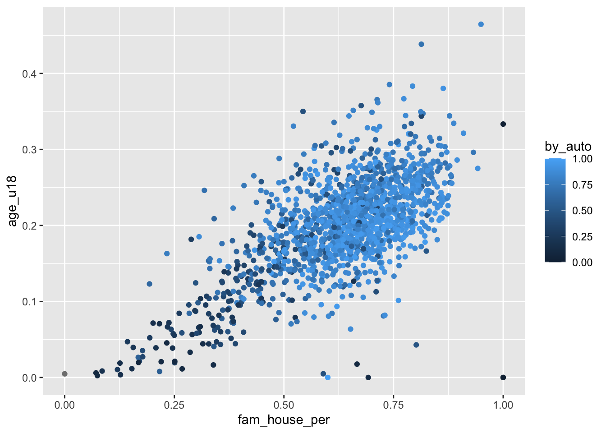
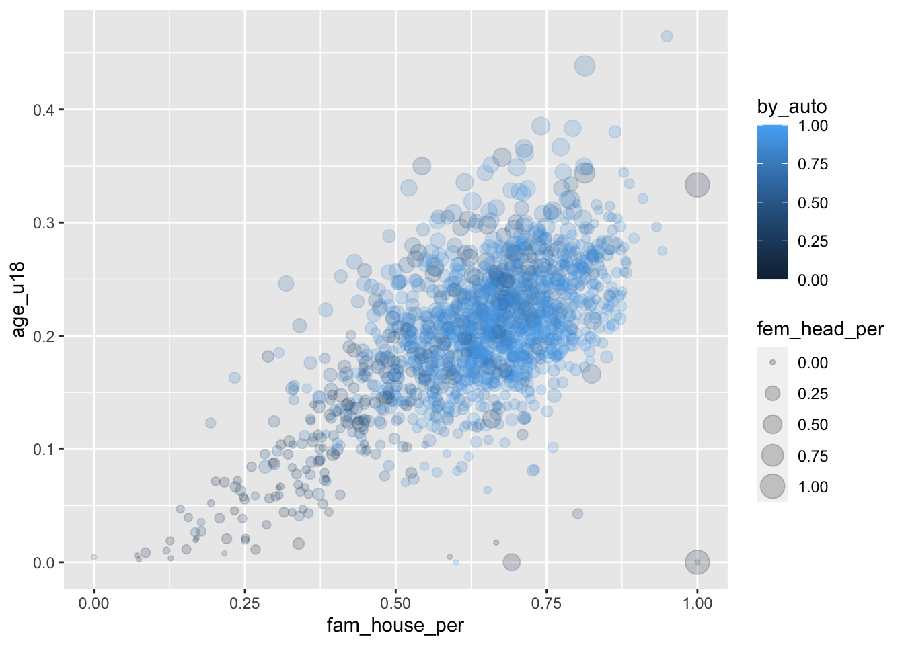

Chapter 15 Visualizing beyond 2-dimensions
To cover:
- coloring / filling
- shaping
- sizing
- faceting
15.1 Expanding bivariate visualizations to trivariate & other tri-variate
- we can visualize other vcariables by setting further aesthetics.
- can set the color or fill, size, and shape
- we alreay did this previously when we set the color, let’s do that here.
- lets see how commuting by walking changes with the family house and under 18 pop
- set the color argument of the
aes()function ascolor = by_walk- it’s important you do this within the aesthetics function
- set the color argument of the
- lets see how commuting by walking changes with the family house and under 18 pop

- we can add size to this as well by setting the
sizeaesthetic- lets see if the more female headed house holds there are affects commuting by car as minors increases
ggplot(acs, aes(fam_house_per, age_u18, color = by_auto, size = fem_head_per)) +
geom_point(alpha = .2)
- from this chart we can see quite a few things:
- as
fam_house_perincreases so does the under 18 pop, - as both
age_u18andfam_house_perincrease so does the rate of communiting by car - as both
age_u18andfam_house_perso does female headed houses, but to a lesser degree - this gives us a good idea of some relationships that we can test with our data at a later point
- as
minors_lm <- lm(age_u18 ~ fam_house_per + by_auto + fem_head_per, data = acs)
huxtable::huxreg(minors_lm)
## Registered S3 methods overwritten by 'broom.mixed':
## method from
## augment.lme broom
## augment.merMod broom
## glance.lme broom
## glance.merMod broom
## glance.stanreg broom
## tidy.brmsfit broom
## tidy.gamlss broom
## tidy.lme broom
## tidy.merMod broom
## tidy.rjags broom
## tidy.stanfit broom
## tidy.stanreg broom| (1) | |
| (Intercept) | 0.000 |
| (0.006) | |
| fam_house_per | 0.245 *** |
| (0.009) | |
| by_auto | 0.016 * |
| (0.007) | |
| fem_head_per | 0.257 *** |
| (0.012) | |
| N | 1311 |
| R2 | 0.564 |
| logLik | 2444.648 |
| AIC | -4879.296 |
| *** p < 0.001; ** p < 0.01; * p < 0.05. | |
Trivariate:
- grouped / stacked bar charts
- heatmaps
Color Ramps:
- diverging when there is a true middle
dark is low bright is high
- most data analyses start with a visualization.
- the data we have will dictate the type of visualizations we create
- there are many many different ways in which data can be represented
- generally these can be bucketed into a few major categories
- numeric
- integer
- double
- character
- think groups, factors, nominal, anything that doesn’t have a numeric value that makes sense to count, aggregate, etc.
- time / order
- numeric